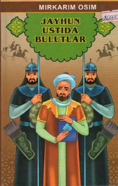

TQMirkarim Osimning tarixiy mavzudagi mashhur qissalari to'plami.
Ushbu kitob o'zbek adabiyotining taniqli namoyandasi Mirkarim Osim qalamiga mansub tarixiy qissalarni o'z ichiga oladi. Asarda To'maris, Jayhun ustida bulutlar, O'tror hamda Zulmat ichra nur kabi tarixiy mavzudagi asarlar jamlangan bo'lib, ular o'tmish voqealari va qahramonlik ruhini aks ettiradi.